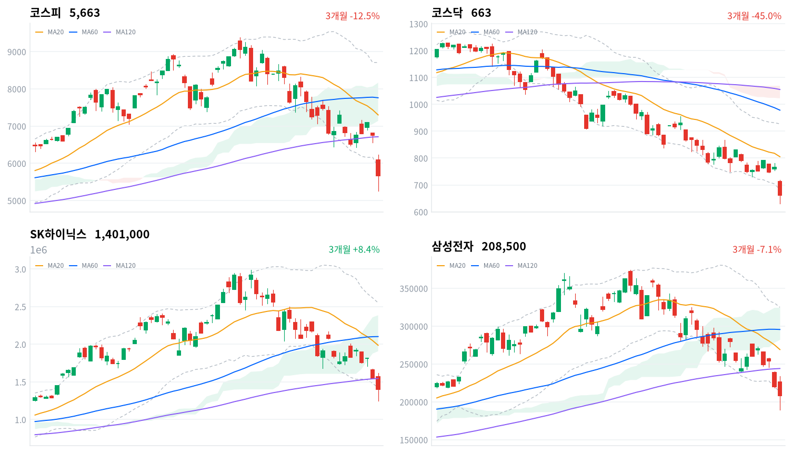

오늘 낙폭의 동인은 전일에 이어 다시 한번 반도체 단일 재료였다. 중국의 DUV 노광장비 자체 양산 소식이 AI 밸류에이션 경계 심리와 맞물려 삼성전자·SK하이닉스 투매로 이어졌고, 오전 매도 사이드카(10시55분)에 이어 낮 12시19분(코스닥)·12시32분(코스피)에 서킷브레이커가 발동되며 코스피·코스닥 동반 서킷브레이커가 이틀 연속(사상 최초) 이어졌다.
코스피는 장중 5,262.77(-12.6%대)까지 밀렸다가 오후 저가 매수세에 낙폭을 되돌리며 5,663.24(-5.98%)로 마감했고, 저가 대비 종가 반등폭이 7.6%를 넘어 패닉과 반발 매수가 하루 안에 교차했다.
수급 구도는 전일과 달라졌다 — 전일 개인이 4조3,152억원을 순매수하며 외국인 매도를 받아냈다면, 오늘은 개인(-1조9,701억원)마저 매도로 돌아서고 기관(+3조1,769억원)이 홀로 방어선을 맡았다. 외국인 순매도(-1조2,502억원)는 사흘 연속이지만 규모는 전일보다 크게 줄었다.
코스피 프로그램 매매가 차익·비차익 모두 순매수(+4,985억원)로 전환된 점은 지수 하단을 일부 지지했지만, 그 방향이 외국인 순매도와 어긋난다는 점에서 기관의 매수가 프로그램을 일부 경유했을 가능성이 있다. SK하이닉스 레버리지(6.56조)가 인버스(5.90조)를 근소하게 웃돈 반면 지수 인버스 ETF(5.22조)가 지수 레버리지(3.70조)를 웃돌아, 개별 종목과 지수 전체에 대한 베팅 방향이 엇갈린 점도 크로스에셋 정합성이 완전하지 않았음을 보여준다.
다음 거래일에는 오늘 잠정치인 개인·외국인·기관 수급이 확정되며 기관의 3조1,769억원 매수가 얼마나 유지되는지부터 확인해야 한다. 기술적으로는 코스피가 오늘 저점(5,262.77)을 지키며 볼린저 하단(5,890.84)을 재진입하는지, 아니면 이 저점을 재차 이탈하는지가 첫 갈림길이다.
SK하이닉스는 실적 발표 이후 시장 반응이 볼린저 하단(1,421,742원) 위로 복귀하는지, 삼성전자는 스윙 저점(189,200원)을 지키는지가 반도체 대형주 반등 여부를 가늠할 확인 트리거다. 대외적으로는 미국 반도체주·중국 노광장비 이슈의 후속 흐름, 대내적으로는 한은의 추가 긴축 시그널과 밸류업 정책 동력 회복 여부가 다음 국면을 가를 변수다.
| 지수 | 종가 | 등락률 | 일중 고가 / 저가 |
|---|---|---|---|
| 코스피 | 5,663.24 | -5.98% | 6,228.52 / 5,262.77 |
| 코스닥 | 662.68 | -6.12% | — |
코스피는 전일 종가(6,023.66) 대비 갭상승 출발해 시가 6,089.11로 개장했고, 장 초반 이날 고가 6,228.52까지 오르며 짧은 반등을 시도했다. 하지만 그 반등은 오래가지 못했다 — 09시 6,112.00, 09시30분 6,098.88, 10시 6,092.32로 서서히 밀리다 10시30분에는 전일 종가 부근인 6,028.74까지 갭상승분을 고스란히 반납했다.
오전 10시55분7초 코스피에, 10시56분7초 코스닥에 매도 사이드카가 잇따라 발동되며 낙폭이 급격히 커졌다 — 11시 5,684.15로 30분 만에 344포인트 넘게 미끄러졌다. 11시30분 5,757.28로 잠시 낙폭을 줄였으나 되돌림은 짧았고, 12시 5,569.40까지 재차 밀리는 과정에서 낮 12시19분13초 코스닥에, 12시32분33초 코스피에 20분간 거래를 정지하는 서킷브레이커가 발동됐다.
거래 재개 이후에도 매물 압력은 가시지 않아 12시30분 5,550.97, 13시 5,531.56에 이어 13시30분에는 5,284.76까지 밀렸고, 이날 저가 5,262.77은 이 구간 어딘가에서 형성된 것으로 보인다. 이는 전일 종가 대비 -12.6%에 달하는 낙폭으로, 장중 한때 코스피가 하루 만에 두 자릿수 하락률에 근접했다는 뜻이다.
오후 들어서는 저가 매수세가 유입되며 낙폭을 되돌렸다 — 14시 5,471.30, 14시30분 5,574.13, 15시 5,611.18, 15시30분 5,663.08을 거쳐 5,663.24(-5.98%)로 거래를 마쳤다. 저가 대비로는 종가가 7.6% 넘게 반등한 셈이어서, 장중 패닉과 마감 무렵의 저가 매수세가 극명하게 갈린 하루였다.
코스닥은 개별 30분봉 데이터가 없어 장중 궤적을 그릴 수는 없지만 662.68(-6.12%)로 마감해 코스피보다 낙폭이 더 컸다. 코스피와 마찬가지로 오전 사이드카·서킷브레이커 이후 낙폭이 커졌을 것으로 추정되나, 이번 데이터에는 코스닥의 시가·고가·저가가 포함되지 않아 구체적 궤적은 확인할 수 없다.
일중 궤적은 코스피 30분봉 기준이며 코스닥 일중 고가·저가·30분봉은 이번 데이터 파이프라인에 미포함. 사이드카·서킷브레이커 발동 시각은 한국거래소 공시 기준(한국일보·헤럴드경제·네이트뉴스·파이낸셜뉴스 보도 종합).

최근 3개월 일봉(캔들)에 이동평균(20·60·120일)·볼린저밴드(20일±2σ)·일목 구름대를 오버레이 — 코스피·코스닥·SK하이닉스·삼성전자, 상승 녹색·하락 적색.
이틀 연속 폭락으로 코스피·코스닥·SK하이닉스·삼성전자 네 종목 모두 볼린저 하단마저 이탈하며 일목 구름 아래 깊숙이 밀려났다. 아래 레벨은 이동평균(20·60·120일)·볼린저밴드(20일±2σ)·일목 구름대를 오늘 종가 기준으로 계산한 조건부 시나리오다.
코스피는 종가 5,663.24포인트로 MA20(7,298.99)·MA60(7,759.59)·MA120(6,711.71)을 모두 밑도는 혼조 국면이며, 볼린저 %b가 -0.081로 하단(5,890.84)마저 하회한 극단적 과매도 상태다. 오늘 장중 저가(5,262.77)는 20일·60일 공통 스윙 저점을 동시에 새로 쓴 수준으로, 이 저점을 지키는지가 최우선 관찰 포인트다. 반등의 첫 관문은 볼린저 하단(5,890.84) 재진입이며, 이를 넘으면 일목 전환선(6,343.48)을 거쳐 구름 하단(7,138.17)·MA20(7,298.99)·일목 기준선(7,324.18) 구간, MA60(7,759.59)과 구름 상단(8,165.11)까지 반등 여지가 열린다. 반대로 오늘 저점(5,262.77)을 재차 이탈하면 이번 데이터 구간에서는 추가 지지선이 확인되지 않는다.
코스닥은 종가 662.68포인트로 MA20(805.01)·MA60(978.29)·MA120(1,055.23)이 순서대로 위에 쌓인 뚜렷한 역배열로, MA120 대비 괴리율이 -37.2%에 달해 네 종목 중 추세 훼손이 가장 심각하다. 볼린저 %b도 -0.082로 하단(682.63)을 이탈한 상태이며, 20일·60일 공통 스윙 저점(630.99)까지는 아직 5% 남짓 거리가 있다. 반등의 첫 관문은 볼린저 하단(682.63) 회복이며, 이어 일목 전환선(731.33)·MA20(805.01)·일목 기준선(805.29) 구간을 넘으면 MA60(978.29)·구름 하단(1,022.24)까지 반등 여지가 있다. 반대로 스윙 저점(630.99)을 이탈하면 추가 지지선을 확인하기 어려운 구간에 들어선다.
SK하이닉스는 2분기 실적 발표 당일 종가 1,401,000원으로 MA20(1,985,750원)·MA60(2,101,933원)은 물론 MA120(1,544,858원)까지 하회하는 혼조 국면에 들어섰다. 볼린저 %b -0.018로 하단(1,421,742원)을 근소하게 이탈했고, 20일·60일 공통 스윙 저점(1,246,000원)과는 아직 거리가 있다. 반등의 첫 관문은 볼린저 하단(1,421,742원) 재진입이며, 이를 넘으면 MA120(1,544,858원)·일목 전환선(1,626,000원)을 거쳐 구름 하단(1,907,000원)·MA20(1,985,750원)·MA60(2,101,933원), 일목 기준선(2,116,500원)·구름 상단(2,385,000원)까지 반등 여지가 있다. 반대로 스윙 저점(1,246,000원)을 이탈하면 추가 지지선이 확인되지 않는 구간에 들어선다.
삼성전자는 종가 208,500원으로 볼린저 %b -0.043로 하단(213,322원)을 이탈했고, 20일·60일 공통 스윙 저점(189,200원)과는 약 9% 거리를 남겨뒀다. MA120(244,052원) 대비 괴리율은 -14.57%로 네 종목 중 가장 양호해, 장기 추세선 회복 가능성이 상대적으로 남아 있다. 반등의 첫 관문은 볼린저 하단(213,322원) 재진입이며, 이를 넘으면 일목 전환선(232,600원)·MA120(244,052원)을 거쳐 MA20(269,100원)·구름 하단(282,300원)·MA60(295,608원)까지 반등 여지가 있다. 반대로 스윙 저점(189,200원)을 이탈하면 추가 지지선이 확인되지 않는다.
기계적으로 계산된 조건부 기술 셋업이며 투자 권유가 아니다. 레벨은 익일 종가로 갱신된다.
| 순매수 (억원) | 개인 | 외국인 | 기관 |
|---|---|---|---|
| 코스피 | -19,701 | -12,502 | +31,769 |
| 코스닥 | -4,579 | +3,082 | +1,474 |
코스피에서는 기관이 3조1,769억원(당일 잠정)을 순매수하며 낙폭 방어의 유일한 축을 맡았다. 전일(7/28) 개인이 4조3,152억원을 순매수하며 외국인 매도를 받아냈던 것과 달리, 오늘은 개인마저 1조9,701억원(당일 잠정) 순매도로 돌아서며 방어선의 축이 개인에서 기관으로 옮겨간 점이 눈에 띈다.
외국인은 코스피에서 1조2,502억원(당일 잠정)을 순매도했다. 전일(7/28) 4조5,009억원, 그 전일(7/27) 2조8,811억원에 이어 사흘 연속 순매도지만, 매도 규모 자체는 전일 대비 큰 폭으로 줄었다. 그럼에도 개인·외국인이 동반 매도에 나서며 기관 홀로 3조원대 매수를 쏟아낸 것이 코스피 -5.98% 낙폭을 그나마 전일의 두 자릿수 낙폭보다 완화한 배경으로 읽힌다.
코스닥에서는 외국인(+3,082억원)과 기관(+1,474억원)이 나란히 순매수했고 개인만 4,579억원(당일 잠정) 순매도했다. 코스피와는 정반대로 외국인이 코스닥에서는 매수 우위를 보였다는 점은, 오늘 매도 압력이 대형 반도체주에 쏠린 코스피 쪽에 더 집중됐을 가능성을 시사한다. 다만 세 시장 수치 모두 당일 잠정치인 만큼 익일 확정 과정에서 방향이 조정될 수 있다.
| 순매수 (억원) | 차익거래 | 비차익거래 | 전체 |
|---|---|---|---|
| 코스피 | +3,558 | +1,427 | +4,985 |
| 코스닥 | +51 | +2,647 | +2,698 |
코스피 프로그램 매매는 차익거래(+3,558억원)와 비차익거래(+1,427억원)가 모두 순매수를 기록해 전체 순매수 4,985억원으로 마감했다. 전일(7/28) 비차익거래가 2조9,539억원 순매도를 주도하며 전체 순매수가 -2조5,983억원에 달했던 것과는 완전히 대비되는 흐름이다.
다만 비차익거래(바스켓 단위 방향성 매매)의 순매수 방향은 외국인의 순매도(1조2,502억원, 당일 잠정) 방향과 어긋나는데, 이는 오늘 외국인 매도의 상당 부분이 프로그램이 아닌 개별 종목 현물 매도로 이뤄졌고, 기관의 3조1,769억원 순매수 중 일부가 비차익 바스켓 매수를 경유했을 가능성을 시사한다.
코스닥 프로그램도 비차익거래(+2,647억원)가 순매수를 주도하며 전체 순매수 2,698억원을 기록했다. 코스닥에서는 외국인(+3,082억원)·기관(+1,474억원) 모두 순매수였던 현물 수급과 비차익 순매수 방향이 일치해, 코스피보다 수급 정합성이 뚜렷했다.
수급·프로그램 매매 수치는 발행 시점 기준 당일(2026-07-29) 잠정치이며, 익일 확정 과정에서 조정될 수 있다.
| 종목·그룹 | 구분 | 거래대금 |
|---|---|---|
| SK하이닉스 | 개별종목 | 17.22조 |
| 삼성전자 | 개별종목 | 12.93조 |
| SK하이닉스 레버리지 | 단일종목 롱 ×4 | 6.56조 |
| SK하이닉스 인버스 | 단일종목 숏 ×1 | 5.90조 |
| 지수 인버스 ETF | 지수 숏 ×7 | 5.22조 |
| 지수 레버리지 ETF | 지수 롱 ×3 | 3.70조 |
| KODEX 200 | 지수 ETF | 3.29조 |
| 삼성전자 레버리지 | 단일종목 롱 ×2 | 1.96조 |
| 삼성전자우 | 개별종목 | 1.26조 |
| TIGER 반도체TOP10 | 업종 ETF | 0.86조 |
거래대금 최상위는 어제에 이어 오늘도 SK하이닉스(17.22조)와 삼성전자(12.93조)가 1·2위를 지켰다. 두 종목 거래대금 합산(30.15조)은 전일(20.87조) 대비 오히려 늘어, 서킷브레이커 발동에도 반도체 대장주로의 매매 쏠림은 더 심해졌다.
방향성 심리는 종목별로 엇갈렸다. SK하이닉스는 레버리지(롱, 6.56조)가 인버스(숏, 5.90조)를 여전히 웃돌아 개인의 저가 매수(역발상) 심리가 살아있었지만, 그 격차(0.66조)는 전일(4.15조 대 2.83조, 격차 1.32조)보다 크게 좁혀져 매수·매도 베팅이 팽팽해졌다. 반면 지수 인버스 ETF(5.22조)는 지수 레버리지 ETF(3.70조)를 오히려 웃돌아, 개별 종목 단위에서는 저가 매수 심리가 남았지만 지수 전체에 대해서는 하락 베팅이 더 우세했던 엇갈린 하루였다.
KODEX 200(3.29조)·삼성전자 레버리지(1.96조)·삼성전자우(1.26조)·TIGER 반도체TOP10(0.86조)이 뒤를 이었다. 반도체 대형주와 그 파생 ETP에 거래가 집중된 만큼, 오늘 낙폭도 반도체 밸류체인에서 가장 크게 나타났다.
거래대금은 정규화 집계 — 같은 기초자산 ETF를 방향별로 묶고 해외지수 ETF는 제외했다. 원자료는 백만원 단위이며 표에는 조원으로 환산했다.
대표 섹터 ETF 기준 1일 수익률은 방산이 -9.98%로 낙폭이 가장 컸고, 건설(-8.62%)·반도체(-8.30%)·조선(-6.11%)·증권(-6.00%)이 뒤를 이었다. 자동차·은행(각 -1.91%)이 상대적으로 낙폭이 가장 작았지만, 12개 섹터 전부가 마이너스를 기록해 하락을 면한 섹터는 단 한 곳도 없었다.
세부 GICS 업종(kr_industry.json, 60개) 기준으로는 레저용장비와제품(+1.21%)·복합유틸리티(+0.97%)·해운사(+0.65%)·광고(+0.5%)·담배(+0.5%)·식품(+0.42%)·음료(+0.24%) 7개 업종만 상승해 leading 플래그가 붙었다. 다만 breadth를 보면 이 상승은 결코 폭넓지 않다 — 복합유틸리티·담배는 종목 수 자체가 1개뿐이라 breadth 1.0이 무의미하고, 92개 종목을 아우르는 식품조차 상승 종목 비중이 17.4%(16종목)에 그쳐 소수 대형주가 업종 평균을 끌어올린 결과에 가깝다.
레저용장비와제품도 breadth 30.8%로 절반에 못 미쳐, JSON의 '폭넓은 상승 주도' 라벨과 달리 실제로는 상승률 상위일 뿐 광범위한 매수세로 보기는 어렵다.
반면 1,533개 종목을 아우르는 최대 표본인 '기타' 그룹은 -3.25% 하락했음에도 상승 종목 비중이 26.3%(403종목)에 달해, 앞서 leading으로 분류된 소규모 업종들보다 오히려 더 넓은 개별종목 반등을 담고 있다. 조선·증권·전자제품·출판·전기유틸리티 등은 상승 종목이 단 하나도 없는(breadth 0.0) 완전한 전멸 양상을 보여, 오늘 장세의 폭이 얼마나 좁았는지를 보여준다.
1D~1Y 막대는 대표 섹터 ETF 수익률, 세부 업종 breadth는 60개 GICS 업종 상승 종목 비중 기준(반도체와반도체장비 항목은 세부 업종 목록에 미포함).
| 테마 | 등락률 |
|---|---|
| 2026 하반기 신규상장 | +7.49% |
| 카지노 | -0.10% |
| 기업인수목적회사(SPAC) | -0.11% |
| 해운 | -0.25% |
| 육계 | -0.59% |
| 렌터카 | -0.63% |
| 윤활유 | -0.82% |
| 스포츠행사 수혜(올림픽, 월드컵 등) | -1.08% |
| 주류업(주정, 에탄올 등) | -1.53% |
| LPG(액화석유가스) | -1.55% |
| 엔젤산업 | -1.72% |
| 소매유통 | -1.90% |
| 구제역/광우병 수혜 | -1.93% |
| 음식료업종 | -1.93% |
| 주유소 | -1.93% |
테마 랭킹에서는 "2026 하반기 신규상장"(+7.49%)만 뚜렷한 플러스를 기록했고, 나머지 14개 테마는 모두 마이너스였다. 다만 거래대금 상위 10위(kr_top_value.json)에는 신규상장 관련 종목이 하나도 이름을 올리지 못해, 이 테마의 강세를 대형 자금 유입으로 뒷받침할 근거는 확인되지 않는다 — 소수 신규상장 소형주의 개별 변동성이 테마 평균을 끌어올렸을 가능성이 크다.
카지노(-0.10%)·SPAC(-0.11%)·해운(-0.25%)·육계(-0.63%) 등은 낙폭이 1% 미만으로 상대적으로 방어됐지만, 이 역시 '주도'가 아니라 '가장 덜 맞은' 테마에 가깝다. 반도체·AI 관련 테마는 이번 랭킹 상위 15개 안에 하나도 포함되지 않았는데, 오늘 낙폭이 가장 컸던 업종이 방산·건설·반도체(업종·섹터 섹션 참조)였던 점을 감안하면 관련 테마들이 순위 하위권으로 밀려났을 개연성이 크다.
음식료업종·주유소·구제역/광우병 수혜가 나란히 -1.93%로 낙폭 상단에 걸쳐 있어, 방어적 성격의 내수 소비재 테마조차 2%에 가까운 하락을 피하지 못했다. 오늘은 특정 재료가 주가를 밀어올리는 국면이 아니라 전방위 매도 속에 상대적으로 덜 하락한 테마를 찾는 하루에 가까웠다.
테마 랭킹·등락률은 kr_theme.json 기준(전체 15개).
| 종목 | 종가 | 비고 |
|---|---|---|
| SK하이닉스 | 1,401,000원 | 거래대금 1위(17.22조), 2분기 실적 발표 당일 — 20일 신저가 |
| 삼성전자 | 208,500원 | 거래대금 2위(12.93조), 볼린저 하단 이탈 |
| 삼성전자우 | - | 거래대금 상위(1.26조), 개별 등락률 데이터 미확인 |
| TIGER 반도체TOP10 | - | 거래대금 상위(0.86조), 반도체 밸류체인 자금 집중 확인 |
오늘도 충격의 중심은 반도체 양대장이었다. SK하이닉스는 종가 1,401,000원으로 20일 스윙 저점을 새로 쓰며 거래대금 1위(17.22조)를 지켰고, 공교롭게도 이날은 2분기 실적 발표가 예정된 날이었다. 컨센서스는 매출 약 84조원·영업이익 약 64조원으로 사상 최고치를 예상했지만, 이미 과열된 기대에 대한 차익실현과 중국발 경쟁 우려가 실적 발표를 기다리지 않고 선반영되며 주가가 먼저 밀렸다.
삼성전자도 종가 208,500원으로 볼린저 하단(213,322원)을 이탈하며 거래대금 2위(12.93조)에 올랐다. 발단은 The Information 보도로 알려진 중국의 DUV(심자외선) 노광장비 자체 양산 소식으로, 글로벌 반도체 산업 내 중국의 경쟁력 추격 우려가 AI 밸류에이션 경계 심리와 맞물려 국내 대장주 투매로 이어졌다.
삼성전자우(1.26조)·TIGER 반도체TOP10(0.86조)도 거래대금 상위에 이름을 올려, 반도체 밸류체인 전반에 자금이 몰렸음을 뒷받침한다. 다만 두 종목·상품의 구체적 등락률은 이번 데이터에 포함되지 않았다.
SK하이닉스·삼성전자 종가는 kr_technical.json 기준. 실적 컨센서스·중국 DUV 이슈는 research_notes.md(뉴시스·헤럴드경제 보도) 인용.
이번 데이터 파이프라인에는 원/달러 환율과 국고채 금리 수치가 포함되지 않아(ECOS API 연동 전) 구체적인 레벨을 확인할 수 없다. 다만 외국인이 코스피에서 1조2,502억원(당일 잠정)을 순매도한 만큼, 환전 수요를 통해 원화에 약세 압력이 실렸을 개연성은 있으나 수치가 없어 방향을 확정할 수 없다.
거시 배경으로는 한국은행이 7월 금융통화위원회에서 기준금리를 2.50%에서 2.75%로 인상하며 추가 인상 기조를 시사한 점이 거론된다. 두 거래일 연속 폭락 이전부터 형성된 긴축 우려가 이번 매도 심리를 자극한 배경 중 하나로 지목된다.
원/달러·국고채 수치는 데이터 미포함(kr_econ.json pending). 한은 금리는 research_notes.md 인용.
이번 폭락의 구조적 배경에는 중국의 반도체 굴기가 자리한다. The Information 보도에 따르면 중국이 DUV(심자외선) 노광장비 자체 양산에 나섰는데, 전문가들은 첨단 공정 적용까지 상당한 시간이 필요하다고 평가하면서도 중장기적으로는 한국 메모리 산업의 경쟁 지형을 바꿀 수 있는 변수로 지목한다. 여기에 SK하이닉스가 2분기 실적 발표를 앞두고 있었던 타이밍이 겹치며, 실적 자체보다 경쟁구도 우려가 먼저 주가에 반영됐다.
한국은행이 7월 기준금리를 2.50%에서 2.75%로 인상하며 추가 인상 기조를 시사한 점도 배경으로 거론된다. 긴축 사이클이 이어질 경우 밸류에이션 부담이 가중된 성장주·반도체주에 상대적으로 더 부담이 될 수 있어, 다음 금통위 일정과 발언 수위가 확인 포인트로 남는다.
밸류업 프로그램은 선거 이후 정치 상황 변화로 정책 동력이 약화됐다는 평가가 나온다. 초기 외국인 순매수를 이끌었던 밸류업 모멘텀이 옅어진 가운데, 오늘 같은 급락장에서 정책적 지지선 역할을 기대하기 어려워졌다는 점은 향후 변동성 국면에서 부담 요인으로 남는다.
정책·촉매 배경은 헤럴드경제·한국일보·네이트뉴스·파이낸셜뉴스·뉴시스 보도(research_notes.md) 인용.